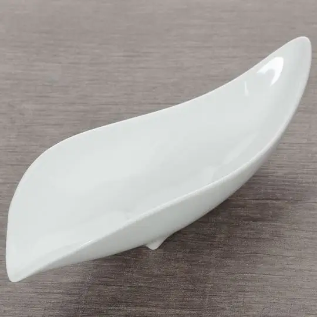

<!DOCTYPE html>
<html lang="en">
<head>
    <meta charset="UTF-8">
    <meta name="viewport" content="width=device-width, initial-scale=1.0">
    <title>LanCha</title>
</head>
<body>
    
</body>
</html><!DOCTYPE html>
<html lang="en">
<head>
    <meta charset="UTF-8">
    <meta name="viewport" content="width=device-width, initial-scale=1.0">
     <title>LanCha</title>
</head>
<style>
    body {  
        background-color:#D9D8D2 ; 
        color: #0D2602; 
         margin: 0;
         font-family: Arial;
    }
    header {
         background: linear-gradient(135deg, #788C4D, #8FA65D); 
        color: #D9D8D2;
        padding: 20px;
        text-align: center;
    }
    nav {
        text-align: center;
    }

    nav a {
        margin: 0 15px;
        color: #0D2602;
        text-decoration: none;
    }
    .here {
    color: #D9D8D2; /* красный */
    font-weight: bold;
    }
    main {
            padding: 20px;
            max-width: 1000px;
            margin: 0 auto;
     }
     footer {
            background: #5A6B3D;
            color: #D9D8D2;
            text-align: center;
            padding: 20px;
        }
</style>
<body>
     <header>
        <h1>LanCha Tea Shop</h1>
        <nav>
            <a href="index.html#about" >О нас</a>
            <a href="tea.html" >Чай</a>
            <a href="accessories.html"class="here">Посуда</a>
            <a href="order.html">Сделать заказ</a>
            <a href="contacts.html">Лицензия</a>
            <a href="https://en.chnmuseum.cn/" target="_blank">Партнёры</a>
            <a href="index.html">На главную страницу</a>
            
        </nav>
    </header>
    <main>
        <h2>Чайные принадлежности для гунфу-ча</h2>
        <p>Всё необходимое для традиционной китайской чайной церемонии. 
        Каждый предмет помогает раскрыть вкус и аромат чая.</p>
        <table border="1" style="width: 100%;" background='AdobeStock_301612173 copy.jpeg'>
    <tr>
        <th>Название</th>
        <th>Цена</th>
        <th>Фото</th>
        <th>Ссылка</th>
    </tr>
    <tr>
        <td>Чайник «Хан Юн Цзы Ни», Исинская глина, 200мл</td>
        <td>5000 ₽</td>
        <td>
            <a href="чайник исин.jpg" target="_blank">
                
            </a>
        </td>
        <td><a href="order.html">Купить</a></td>
    </tr>
    <tr>
        <td>Чайная пара 40мл "Цветы", фарфор</td>
        <td>1200 ₽</td>
        <td>
            <a href="чайная пара.webp" target="_blank">
                
            </a>
        </td>
        <td><a href="order.html">Купить</a></td>
    </tr>
    <tr>
        <td>Чахэ, фарфор</td>
        <td>800 ₽</td>
        <td>
            <a href="чахэ.webp" target="_blank">
                
            </a>
        </td>
        <td><a href="order.html">Купить</a></td>
    </tr>
</table>
    
    <h3>Почему важна правильная посуда?</h3>
<ul>
    <li><strong>Исинские чайники</strong> "запоминают" вкус чая и улучшают его со временем</li>
    <li><strong>Чахэ</strong> позволяет оценить аромат сухого чайного листа</li>
    <li><strong>Чайные пары</strong> сохраняют температуру и аромат напитка</li>
</ul>

<h3>Как выбрать?</h3>
<p>Мы поможем подобрать посуду под ваш любимый сорт чая. 
Приходите на чайную церемонию в нашем магазине!</p>
    <div style="text-align: center; margin: 20px 0;">
            <a href="#top">К началу</a>
        </div>
    </main>
     <footer>
        <p>&copy; 2025 LanCha. Все права защищены.</p>
    </footer>  
</body>
</html>